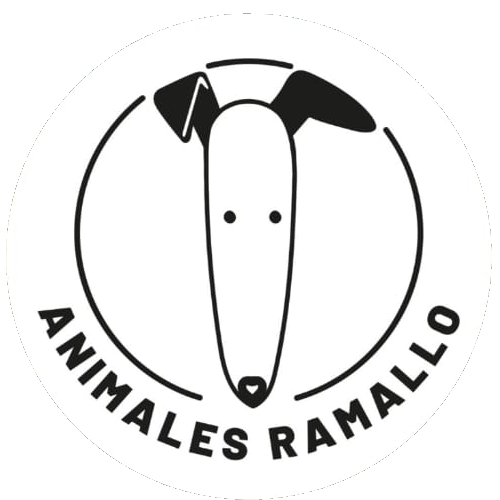

Conocé
Elegí un perro y conocé su historia, personalidad y necesidades.

ONGAnimales RamalloHay un peludito esperando una familia responsable. Conocé sus historias y ayudanos a seguir rescatando.

Deslizá, conocelos y elegí a quién querés darle una nueva oportunidad.
Queremos que cada adopción sea responsable, acompañada y para toda la vida.
Elegí un perro y conocé su historia, personalidad y necesidades.
Completá el formulario de adopción con información sobre vos y tu hogar.
El equipo revisa la solicitud y se comunica con vos para avanzar.
Si todo está listo, empieza una nueva historia juntos.
Veterinaria, alimento, medicamentos y rescates necesitan de personas que quieran dar una mano.

Podés hacer un aporte único o mensual a través de Mercado Pago.
Todo lo que pasa día a día también lo compartimos en Instagram.
@onganimalesramallo ↗